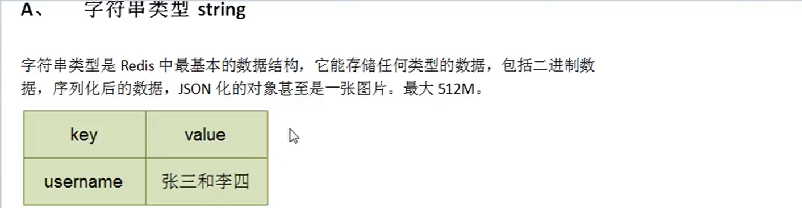

redis安装完成之后，需要通过 客户端去使用（类似于mysql）。
与mysql不同的是， 连接redis默认是不需要用户名和密码的（追求效率），但是redis也可以通过用户名和密码去连接。
一、 redis客户端：
redis客户端是一个程序，通过网路连接到redis服务器，从而实现跟redis服务器的交互。
redis客户端发送命令，同时显示redis服务器的处理结果。
redis-di（Redis Command Line Linterface）是redis自带的基于命令行的Redis客户端，用于与服务端交互，我们可以使用该客户端来执行redis的各种命令：
1、启动Redis客户端：
使用命令：redis-cli：默认连接127.0.0.1（本机）上的6379端口上的redis服务。
命令 redis-cli -p 端口号：连接本机上指定端口号的redis服务
命令 redis-cli -h ip地址 -p 端口号:连接指定ip主机上的指定端口的redis服务。
2、关闭（退出）客户端 ：exit命令或者quit命令
二、redis的基本知识：
1、测试redis服务的性能：在任意目录下执行redis- benchmark命令
模拟一些数据库连接请求，对自身redis服务进行测试
2、redis沟通命令，查看状态（查看redis服务是否正常运行）
redis>ping 返回PONG
解释：输入ping，redis给我们返回PONG，表示redis服务运行正常
3、查看redis服务器器统计信息：
info命令
#Server：redis服务器信息
#Clients：redis客户端的信息
#Meory：内存信息
#Persistence：持久化信息
#Stats：状态信息
#Peplication：集群信息
#CPU：CPU信息
#Cluster：
info 【信息段】查看redis服务器 指定的统计信息
4、redis的数据库实例：作用类似于mysql的数据库实例，redis的数据库实例由redis自己创建和维护，开发人员不能自己创建，也不能改名；默认情况下，redis会自动创建16个数据库实例，并且给这些数据库实例进行编号，，从0开始，一直到15。使用时通过编号来使用数据库；可以通过配置文件，指定redis自动创建的数据库实例的个数；redis每一个数据库实例本身占用的存储空间是很少的（不需要维护表结构），所以不会造成存储空间的太多浪费。
默认情况下，redis客户端连接的是编号为0的数据库实例；可以使用 select index 进行切换数据库实例（index是编号）。
5、查看数据库中key的数目：dbsize
语法：dbsize
作用：返回当前数据库的key的数量
返回值：数字，key的数量
6、查看当前数据库实例中所有的key：keys *
7、清空数据库实例：flushdb
8、清空所有的数据库实例：flushall
9、查看redis中所有的配置信息：config get *
查看redis中指定的配置信息：config get parameter
三、redis的5种数据结构
程序是用来处理数据的，Redis是用来存储数据的，程序处理完的数据需要存储在数据库中，不同特点的数据要存储在redis中不同类型的数据结构中。
java语言 redis
---------------------------------------------------------------------------------------------------------------------------------------
字符串： string：单key：单value
---------------------------------------------------------------------------------------------------------------------------------------
list列表（有序，可重复）： list：单key：多有序value
---------------------------------------------------------------------------------------------------------------------------------------
set集合（无序，不可重复）： set：单key：多无序value
---------------------------------------------------------------------------------------------------------------------------------------
pojo（实体类）： hash：单key：对象（属性：值）
eg:student:id:1001,name:zhangsan,age:20
---------------------------------------------------------------------------------------------------------------------------------------
zset：单key：多有序value：
eg：city：2000 bj，1500 sh，1000 tj，1200 cp
---------------------------------------------------------------------------------------------------------------------------------------
其中：zset和list都是：单key：多有序value，但是list有序是指和存入的顺序有关系，zset有序是对数据存入前给定一个数值表示其顺序，而和存入的顺序无关。



三、redis常用指令介绍
1、Redis中有关Key的操作命令
1、1 查看数据库中的key： keys
语法：keys pattern
作用：查找所有符合模式pattern的key 。pattern可以使用通配符
通配符：
* ：表示0或多个字符，例如：keys * 查询所有的key；
keys k*：查看所有以key开头的key
keys l*o：查看所有以l开头，以o结尾的key
？：表示单个字符，例如：wo？d，匹配 word,wood
[]：表示选择[]内的一个字符，例如wo[or]d，匹配word、wood，不匹配wold、 woord
1、2 判断key在数据库中是否存在：exists key名 。如果存在返回1；如果不存在则返回0。
exists k1 k2 k3。返回存在key的个数。
1、3 移动指定key到指定的数据库实例：move key名 数据库编号
1、4 查看指定key的剩余生存时间：ttl key名 。如果key不存在，返回-2；如果key没有设置生存时间，返回-1；
1、5 设置key的最大生存时间：expire key名 时间（秒）。从设置时开始计时。
1、6 查看指定key的数据类型：type key名
1、7 重命名key：rename key名 newKey名
1、8 删除指定的key：del key名 删除指定的key
del key1 key2 key3。返回值是实际删除的key的数量
2、String类型数据的操作命令
2、1 将字符串类型的数据保存到redis：set 键 值
eg：set zsname 张三
set zsage 20
set zsage 30，如果key已经存在，则后来的value会将以前的value覆盖掉
2、2 从redis中获取string类型的数据：get 键
2、3 追加字符串：append key名 value，返回追加后字符串的长度。如果key不存在，则重新创建一个key，并且value值设置为value。
2、4 获取字符串数据的长度：strlen key名
2、5 将字符串数据值进行加1运算：incr key名
返回加一运算之后的数据
如果key不存在，首先设置一个key初始化数据为0，然后进行incr运算。
要求key表示的value必须是数值，否则会报错。
2、6 将字符串数值进行减1运算：decr key
返回减一运算之后的数据
如果key不存在，首先设置一个key初始化数据为0，然后进行decr运算。
要求key表示的value必须是数值，否则会报错。
2、7 将字符串数值进行加offset运算：incrby key名 offset
返回加offset运算之后的数据
如果key不存在，首先设置一个key初始化数据为0，然后进行incrby运算。
要求key表示的value必须是数值，否则会报错。
2、8 将字符串数值进行减offset运算：decrby key名 offset
返回减offset运算之后的数据
如果key不存在，首先设置一个key初始化数据为0，然后进行incrby运算。
要求key表示的value必须是数值，否则会报错。
2、9 获取字符串中的子字符串：gettrange key名 startIndex endIndex
获取从startIndex 到endIndex的子字符串
包含startIndex和endIndex处的字符。
字符串下标从0开始。
字符串中每一个下标也可以是负数，负下标表示从右至左，从-1开始，也就是最右边的下标是-1。
2、10 用value覆盖从下标为startIndex开始的字符串：setrange key名 startIndex value
2、11 设置字符串数据的同时设置最大生命周期： setex key名 seconds value
2、12 设置string类型的数据到redis数据库，当key不存在时设置成功，否则放弃设置：setnx key名 value
2、13 批量将string类型的数据设置到redis中：mset 键1 值1 键2 值2 ......
2、14 批量从redis中获取string类型的数据：mget 键1 键2 键3 .......
不存在键时，返回（nil）
2、15 批量设置string类型的数据value到redis数据库当中，当所有key都不存在时设置成功，否则（只要有一个已经存在）则全部放弃设置：msetnx 键1 值1 键2 值2 ......
3、redis中有关list类型数据的命令
list类型数据：单key-多有序value（可重复）；
有序指的是多个key之间的顺序；
元素在列表中的顺序由放入的顺序决定
正数表示：表头是0，表尾是length-1；
负数表示：表尾是-1，表头是-length
通过key和下标来操作数据。
3、1 将一个或者多个值一次插入到列表的表头（左侧）：lpush key名 value1 value2 value3
eg lpush key1 1 2 3 放入之后 3 2 1
3、2 获取指定列表中指定下标区间的元素：lrange key名 startIndex endIndex
3、3 将一个或者多个值一次插入到列表的表尾（右侧）：rpush key名 value1 value2 value3
3、4 从指定列表中移除并且返回表头元素：lpop key名
3、5 从指定列表中移除并且返回表尾元素：rpop key名
3、6 获取指定列表中指定下标的元素：lindex key名 index
3、7 获取指定列表的长度：llen key名
3、8 根据count值移除列表中根value相等的数据：lrem key名 count
value
count>0表示：从列表的左侧移除count个根value相等的数据
count<0表示：从列表的右侧移除count个根value相等的数据
count=0表示：从列表中移除所有根value相等的数据
4、set集合类型的操作命
set集合：单key-多无序value
一个key对应多个value；
value之间没有顺序并且不能重复；
key是集合标识，元素没有下标，只有直接操作业务数据和数据的个数；
4、1 将一个或者多个元素添加到指定集合中：sadd key名 value1 value2 value3 ......
如果元素已经存在，则会忽略；
返回成功加入元素的个数。
eg：sadd set a b c a 结果：a b c
4、2 获取指定集合中所有的元素：smembers key名
4、3 判断指定元素（member）在指定集合中是否存在：sismenber key名 member元素
存在返回1，不存在返回0
4、4 获取指定集合的长度：scard key名
4、5 移除指定集合中 一个或者多个元素：srem key名 member1 member2 member3......
不存在的元素会被忽略；
返回成功移除的元素的个数。
4、6 随机获取指定集合中的一个或者多个元素：srandmember key名 【count】
如果count>0：表示从集合中获取count个元素，而且count个元素之间不能重复；
如果count<0：表示从集合中获取count个元素可能重复；
不指定count表示随机获取一个元素
4、7 从指定集合中随机移除一个或者多个元素：spop key名 【count】
不指定count表示：随机移除一个元素
4、8 将指定集合中的指定元素移动到另一个集合：smove source dest member
eg： smove set01 set02 a
4、9 获取一个集合（key）中有，但是其他集合（key1、key2）中都没有的元素组成的新集合：sdiff key key1 key2
4、10 获取所有指定集合中都有的元素组成的新集合：sinter key1 key2 key3
4、11 获取所有指定集合中所有元素组成的大集合：sunion key1 key2
5、hash类型数据有关命令
hash类型：单key：field-value field-value
5、1 将一个或者多个field-value对设置到哈希表中：hset key名 field1 value1 field2 value2
如果key field已经存在，value会将以前的值覆盖掉
5、2 获取指定哈希表中指定field的值：hget key名 field名
5、3 批量设置将多个field-value设置到hash表中：hmset key名 field1 value1 field2 value2
5、4 批量获取指定哈希表中的field的值：hmget key field1 field2 field3
5、5 获取指定hash中所有的field和value：hgetall key名
5、6 从指定hash删除一个或者多个field：hdel key名 field1 field2
5、7 获取指定hash表中所有的field个数：hlen key
5、8 判断指定hash中是否存在某一个field：hexists key名 filed
5、9 获取指定hash中所有的field列表：hkeys key名
5、10 获取指定hash中所有的value列表：hvals key名
5、11 对指定hash中指定field值进行整数加法运算：hincrby key名 field int值
eg：hincrby stu1001 age 5
5、12 对指定hash表中指定field值进行浮点数加法运算：hincrbyfloat key名 field float值
5、13 将一个field-value对设置到hash中，当field已经存在时放弃设置，否则设置hsetnx key名 field value
6、有序集合zset操作命令
zset：兼具list和set的特点，本质上是set，所有元素不能重复，但是有顺序，和list的顺序不同的是，list的顺序和放入顺序有关，而zset 的顺序和自定义的“分数”有关。注意：元素不能重复，但是分数可以重复。
既然有序集合中每一个元素都有顺序，那么也都有下标。
6、1 将一个或者多个member及其score分数值加入有序集合：zadd key名 score1 member1 score2 member2
score可以是整数也可以是小数，但必须是数值
如果元素已经存在，则把分数覆盖；
6、2 获取指定有序集合中指定下标区间的元素：zrange key名 startIndex endIndex
zrange key名 startIndex endIndex withscores //显示元素的同时显示分数
6、3 获取指定有序集合中指定分数区间（闭区间）的元素：zrangebyscore key名 min max
zrangebyscore key名 min max withscores //显示元素的同时显示分数
6、4 删除指定有序集合中一个或者多个元素：zrem key名 member1 member2
6、5 获取指定有序集合中所有元素的个数：zcard key名
6、6 获取有序集合中指定的元素的排名（排名从0开始）：zrank key名 member
6、7 获取指定有序集合中分数在指定区间内元素的个数：zcount key名 min max
6、8 获取指定有序集合中指定元素的分数：zscore key名 member
6、9 获取指定有序集合中指定元素的排名（从大到小）zrevrank key名 member